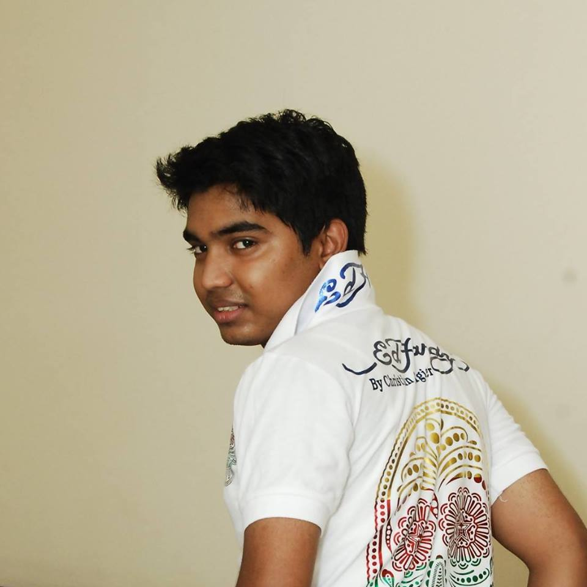

About me
I am a detail-oriented and collaborative Electrical Engineering professional with 6 years of combined academic and industry experience, demonstrated software and programming skills, plus a remarkable ability to execute projects from ideation to testing, seeking a new, challenging role as Electrical and Electronic Engineer. I find myself strongly drawn to the unique working philosophy , and believe that I am well aligned to excel in the available opportunity. Throughout the progression of my career, I have developed a highly-refined skillset centred on electrical engineering. Whether designing a prototype to facilitate wireless mobile charging, researching the feasibility of expanded electric and hybrid vehicle infrastructural support, or testing vehicles in an automotive plant to guarantee quality assurance, I have consistently demonstrated the skills needed to succeed as an electrical engineer.
